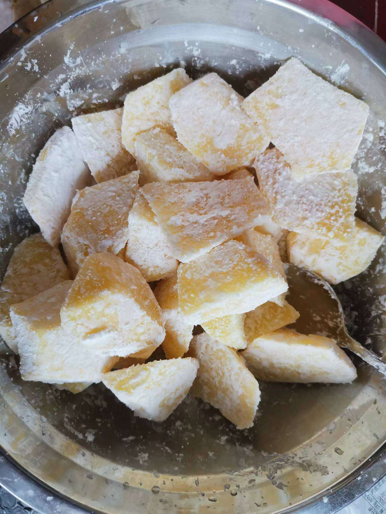
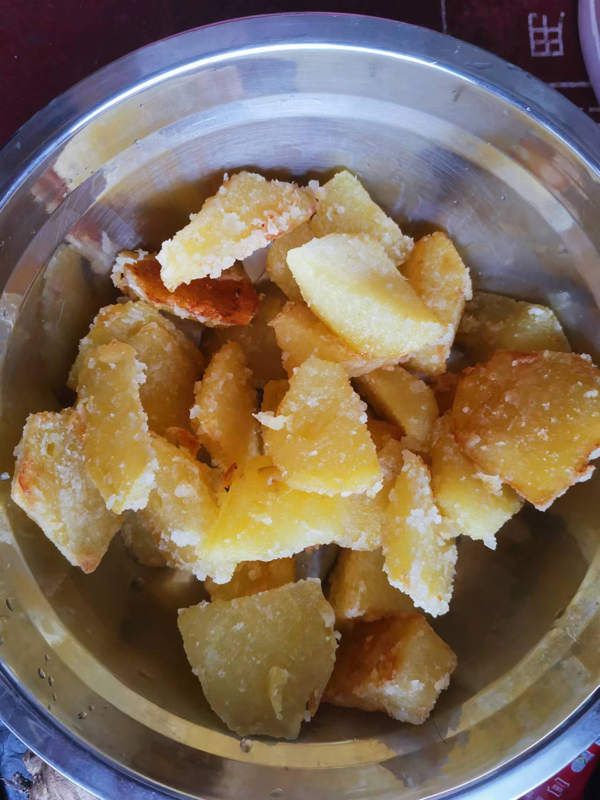
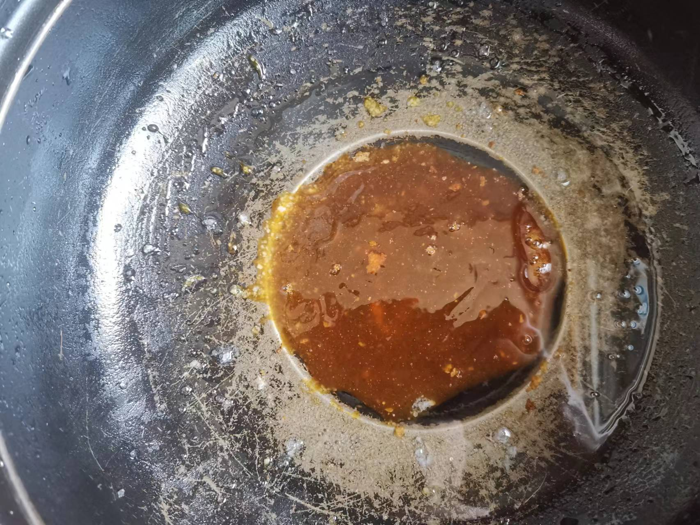
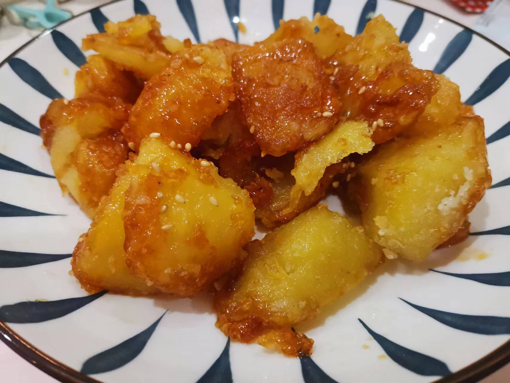

拔丝土豆的做法
拔丝土豆是一道色香味俱全的特色名菜，属于鲁菜系
预估烹饪难度：★★★
必备原料和工具
- 土豆
- 食用油
- 淀粉
- 白砂糖
- 水
- 芝麻
计算
每份：
- 土豆 2 个
- 食用油 300 ml （土豆能浮在油上面即可）
- 淀粉 30 g
- 白砂糖 120 g （要多放糖，这是为了在土豆上面裹上一层厚厚的糖浆，从而产生拔丝的效果）
- 水 100 ml
- 芝麻 5 g
操作
- 土豆去皮，切均匀的小块。放入淀粉（不加水）搅拌，使得淀粉覆盖土豆表面
- 起锅烧油，放入土豆块，缓缓翻滚煎炸 5-7 分钟 ，直至筷子可以插进土豆
- 取出土豆，放入大碗备用
- 锅中加入水、白砂糖，沿着一个方向慢慢搅动白砂糖，直到白砂糖颜色变成褐色
- 重新倒入土豆，翻炒 30 S 后 出锅
- 土豆盛盘，散上芝麻
   
附加内容
- 土豆煎炸不可太熟透，否则在拔丝端盘时不容易定型，影响美观
- 对于使用剩余的食用油，可以考虑重新收集到油壶。
如果您遵循本指南的制作流程而发现有问题或可以改进的流程，请提出 Issue 或 Pull request 。